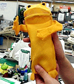

私も入っています。。
全国かえる奉賛会 全国かえる奉賛会に入会するには、自分のホームページに、上のバナーを貼り付けるだけ。どんどん入会しましょー。大王様に会うには、上の絵をクリック。ずずっと奥に写真館があるぞ。 |
|
【かえる古新聞】
|
|
【カエル速報】 1.カエルグッズ 2.カエルリンク 3.国家健全化計画 4.謎の髭男 5.とっくりくん 6.街頭で見た蛙 7.カエルショップ 8.奉納カエル絵馬 9.カエル・コスプレ 10.カエルな表紙 |
| 大王様へのメール |
奉賛会推薦菓子
かえる饅頭 この欄に紹介するカエル物品や書籍について情報を待ってます。みんなで掘り起こそう、カエル土産。かえる産品を奨励しよう！使うほど安く良くなるカエル品 |
|
|
この梅雨、できるＯＬのカエルアイテム
|
 |
|
|
色は黄色で、どんな服にもとっても良く似合う。なによりも、ルルルルルと呼び出しが鳴ったら、大切な顧客との会話を中断して『ごめんなさーい』と言いながら、おもむろにカエルの口を開いて、中から電話機を取り出すなんて『超おしゃれー！！』なのである。
やっぱり、これからの季節は『仕事ができるＯＬに欠かせないわよね』。この梅雨、この携帯カエルホルダーがばか売れすることは間違いないであろう。
宮崎ケロケロ共和国の資料届く
【福岡発=げこげこ大王７世】５月２０日号で紹介したのじりこぴあカエル大群落について、気合いが入った偉大な宮崎県人の石崎雄三さまから、のじりこぴあ関連の資料が大量に到着しました。現在解析中です。石崎さん。どうもありがとねー。次号で詳細レポートを掲載予定です。イラストマップから無事かえるまで
【宮崎発=石崎雄三さま】以上５点をお届けし、かえる新聞の、今後ますますの発展を祈念していたします。
感涙にむせび深謝す
【げこげこ大王７世】石崎さま。ほんとにありがと。このページ見てくれるとありがたいです。いただいた資料はさっそくデジカメで、みなさんにも紹介して、あのカエル大群落のなぞを解明して、みなさんにお伝えしますね。今後ともよろしく。宮崎と言えば、シーガイヤとか青島とか思っている諸君。これからは、のじりこぴあだ。ここに行こう。 【全国かえる奉賛会】アクセス５５５５人目に、贈るプレゼントを決めました。福岡市のキャナルシティーのヒヨコ・カエルショップで売っていたキーホルダーです。かわいいよー。準備しているうちに突破したりしないよう、ちびちびカウンタ増やしてくれー(笑)。どうやって、５５５５人目を知るかって？それが問題だなー(笑)まー自己申告だよね。同着多数の時は、大王ページのどこかに隠されているカエル神殿入り口の拝殿で、奉加帳に記帳してくれい。ずばりの人がでかいほうで、惜しいの人は、ちびっこいほうだね。手紙に入れるので、どちらも小さなものだよね。
| 風邪をひいちまった◆夜が暑いので寝間着をはだけてねていてら、風邪をひいてしまって、たいへんだった。腰がだるくて、会社から帰ってくるときなんぞ、あんまりだるいので、犬みたいにはいつくばって歩きたくなったほどだ◆人間は、直立歩行しはじめてから、腰痛が宿命になったそうだが、風邪ひいたときなんかに、腰が超だるいと、人類の進化をうらみたくなるぞ◆そこえゆくと常に安定した姿勢でいられるカエルが一番だね◆でもでも、メールだけは根性でみにきていたが、なにしろパソコン置いているちゃぶだいに向かってきちんと座れないので、そこらへんにごろごろしながらキーボードたたいていた◆ああー他人にはみせられんなー(笑)◆みなも風邪はひくなよー |